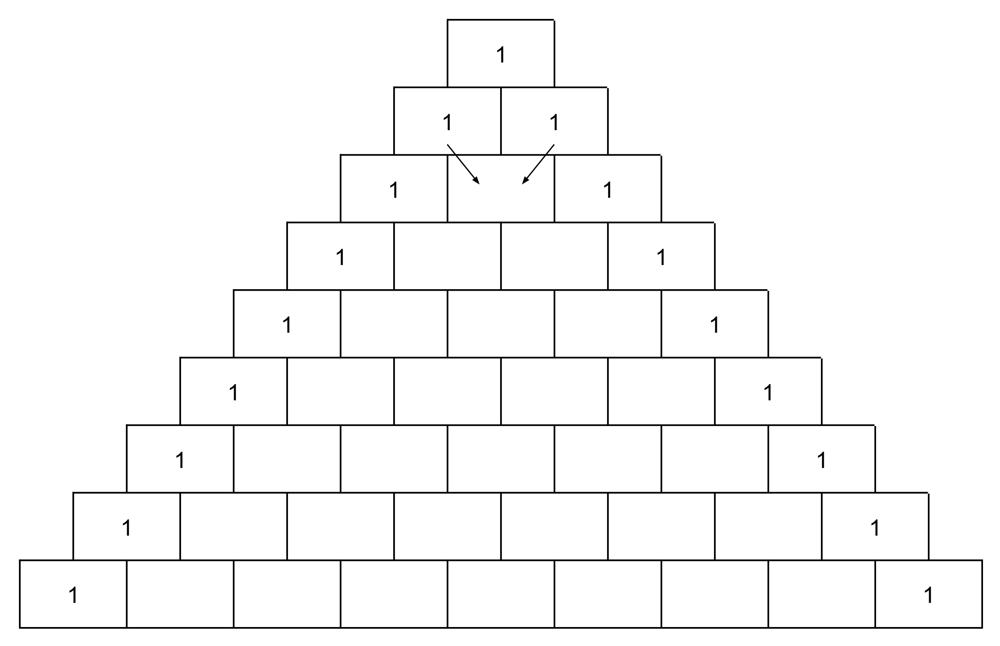
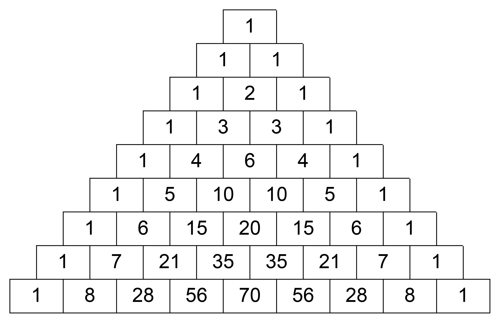

Problem
Diana has outlined the following triangle formed of boxes:

Diana fills in the top box of the triangle with a 1. The first box and last box of the remaining rows of the triangle are filled with a 1. The rest of the boxes in each row are filled with the sum of the numbers in the two boxes in the row above that touch the top side of the box Diana is filling. For example, the middle box of the third row is filled with the sum of the numbers in the two boxes in the second row.
What does the triangle look like after Diana has filled in all of the numbers according to the rules described above?
Can you find any patterns in the finished triangle? Share these patterns with others in your class.
Not printing this page? You can fill in the boxes on our interactive worksheet.
Solution
Here is the completed triangle:

Teacher’s Notes
This problem is an exploration of Pascal’s Triangle which is named for French mathematician Blaise Pascal (1623 - 1662). There are lots of patterns to be found in this structure. It is easier to describe many of the patterns in terms of rows of the triangle, in particular we refer to the top row of the triangle as Row 0. Here are a few of the patterns:
The triangle is symmetric along a vertical line of symmetry. In other words, the left side matches the the right side.
Starting with a 1 in Row 1 and moving along the diagonal, we see the whole numbers in order: \(1, 2, 3, 4, 5, 6, 7, 8\).
Starting with a 1 in Row 2 and moving along the diagonal, we see the differences between adjacent numbers increasing by 1 at each step: \((3 - 1) = 2, (6 - 3) = 3, (10 - 6) = 4, (15 - 10) = 5, (21 - 15) = 6, (28 - 21) = 7\).
The sum of the numbers in a row is twice the sum of the numbers in the row above. For example, the sum of the numbers in Row 5 is \(1 + 5 + 10 + 10 + 5 + 1 = 32\), and the sum of the numbers in Row 4 is \(1 + 4 + 6 + 4 + 1 = 16\).
In general, the sum of the numbers in the \(n^{th}\) row is \(2^n\).If you start at any 1 and move along the diagonal which is not a diagonal of 1s, and then change direction for the last number, then the sum of the entries along the diagonal will equal the last number. For example, starting with a 1 in Row 3: \(1 + 4 + 10 + 20 = 35\). This is often referred to as the Hockey Stick Identity, because if you circle the numbers in this path, the shape will look somewhat like a hockey stick.
In Algebra, the numbers in the \(n^{th}\) row provide the coefficients for the expansion of a binomial expression raised to the \(n^{th}\) power. For example, \((x + y)^3 = 1x^3 + 3x^2y + 3xy^2 + 1y^3\).
The list above is not comprehensive, there are many other patterns in Pascal’s Triangle. Hopefully your students were able to find some others!